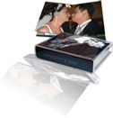
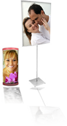
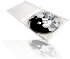
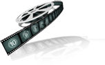
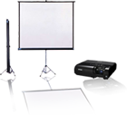
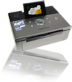

|
 |
|
| Desenvolvendo uma tecnologia própria, conseguimos uma forma de montar fotos panorâmicas com até 30x64- cm, laminadas com um filme plástico especial fosco ou brilhante, sem cortes de página, encadernados com capa fotográfica ou vários acabamentos como couro e outros materiais. O resultado supera um livro de arte. |
| Convites personalizados criados sob medida para atender suas necessidades com tamanhos 10x15 e 15x21, fosco ou brilho. Próprios para diversas situações como casamentos, 15 anos e aniversários entre outros. |
| Ampliações de pôster a partir 60x90 em mdf ou moldura.Imagens produzidas em nosso estúdio e tratadas por profissionais, impressas em papel fotográfico. |
|  | |
| Luminárias personalizadas de tamanhos diversos, estilo redondo ou com pedestal, base mdf, não acompanha lâmpada. Imagens produzidas em estúdio. |
|  | |
| CD´s para lembrança gravados com músicas que marcaram as vidas dos noivos. Cerca de 20 faixas gravadas em mídia de qualidade duráel com capa personalizada. |
| Lembranças de mesa ou de arranjo para casamentos, aniversários ou casamentos. Impressas em papel fotográfico com fotos produzidas e editadas. |
|  | |
| Clipe editado de fotos contando a vida dos noivos ou do aniversariante, com trilha sonora e fotos de making of ou estúdio (opcional). Acompanha CD com capa personalizada. |
|  | |
| Projeção simultânea em telão das fotos do evento descarregadas no local em um notebook e visualizadas pelos participantes no mesmo instante. Projetor de última geração ampliando as imagens sem perder qualidade ou resolução. |
|  | |
| Impressão de fotos no local do evento com templates personalizados no tema do evento para entrega imediata aos convidados e participantes. Papel fotográfico, impressora a laser e pessoal qualificado para execução das impressões. |